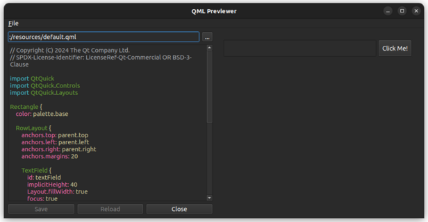

QML Previewer Example
Demonstrates how to mix QML with a Qt Widgets application using QWidget::createWindowContainer().

The example demonstrates how you can embed Qt Quick inside a widgets application, and how different UI aspects integrate between Qt Widgets and Qt Quick. This includes:
- Tab focusing between widgets and Qt Quick
- Drag and drop between widgets and Qt Quick
- Shortcuts defined in the embedded QML file
- Embedding a QQuickView inside a QLayout
See also QWidget::createWindowContainer().